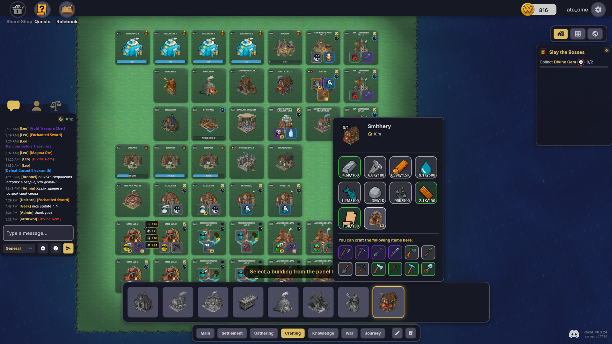
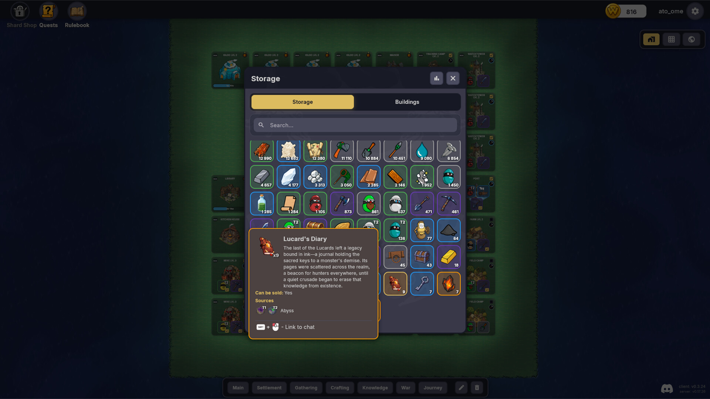
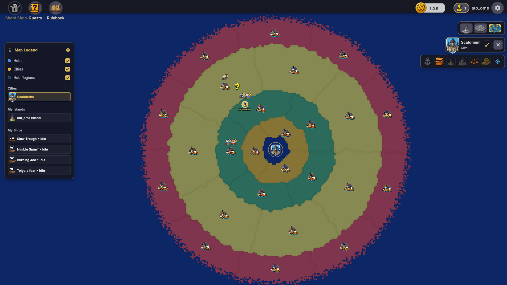
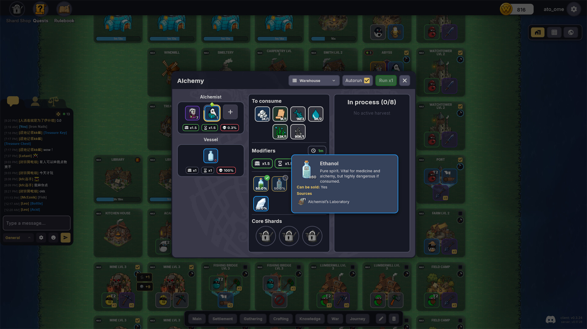
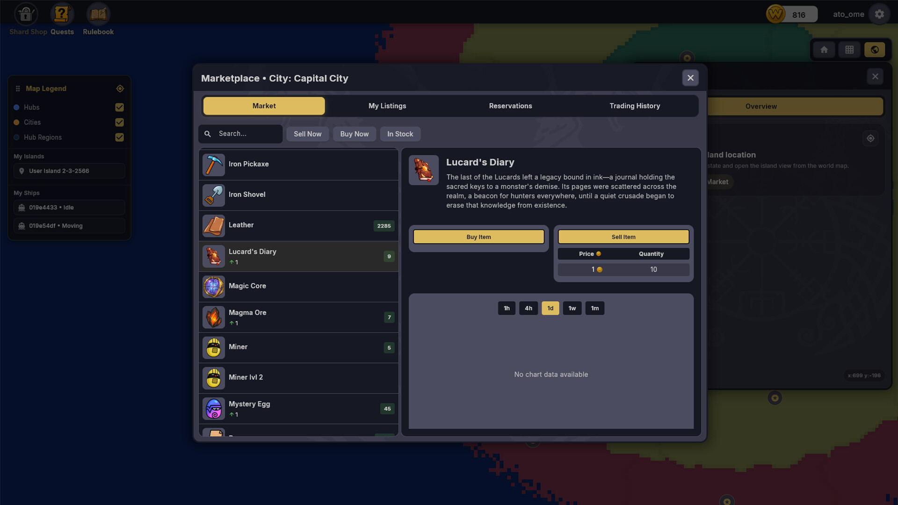
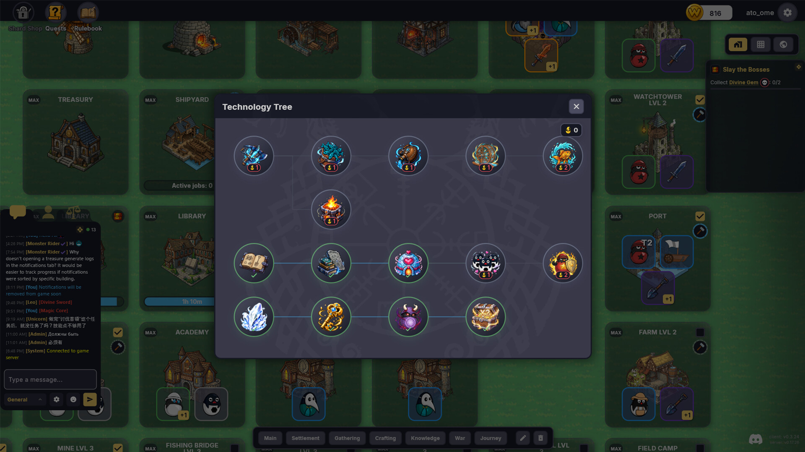

Idle / Incremental · Strategy · MMO
World of Eggs:
Idle Adventures
One-line guide Build a civilization, automate its economy and grow alongside other players.






01 / 07
Automate the routine. Plan the empire.
About World of Eggs
Build your own civilization while resource gathering, crafting and distribution continue automatically—even when you are offline. Your attention stays on strategy: shaping an economy, trading with other players and preparing armies for cooperative raids.
- Build trade chains, rent items and use a player-driven market.
- Automate crafting, resource gathering and army development.
- Join cooperative raids, defeat bosses and collect rare rewards.
- Discover more than 100 units and over 200 resources, artifacts and collectibles.
Description and media are based on the official Steam listing. World of Eggs: Idle Adventures and its media belong to SQRT Games.
Development status
What Early Access means
World of Eggs: Idle Adventures is currently an Early Access game. Its systems, content and balance may continue to change as SQRT Games adds units, items and mechanics. Check the Steam page for the latest build notes and development updates.